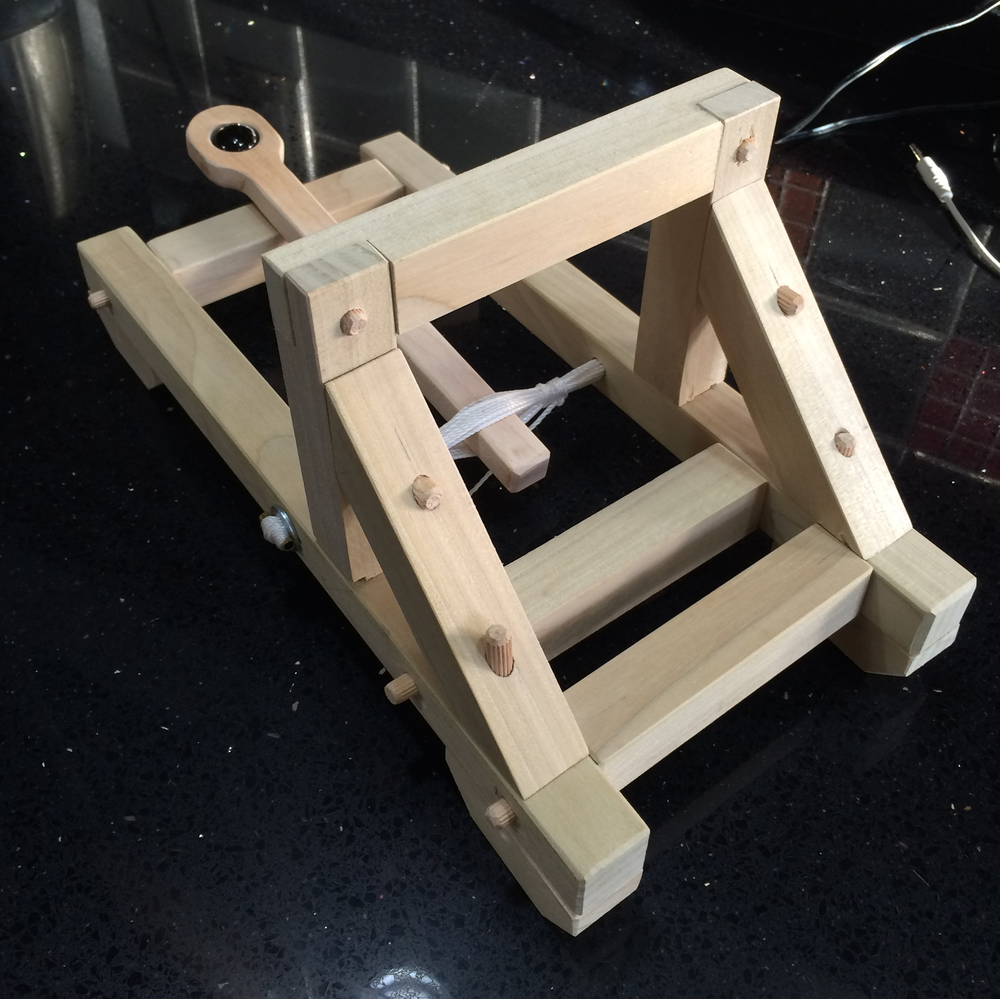
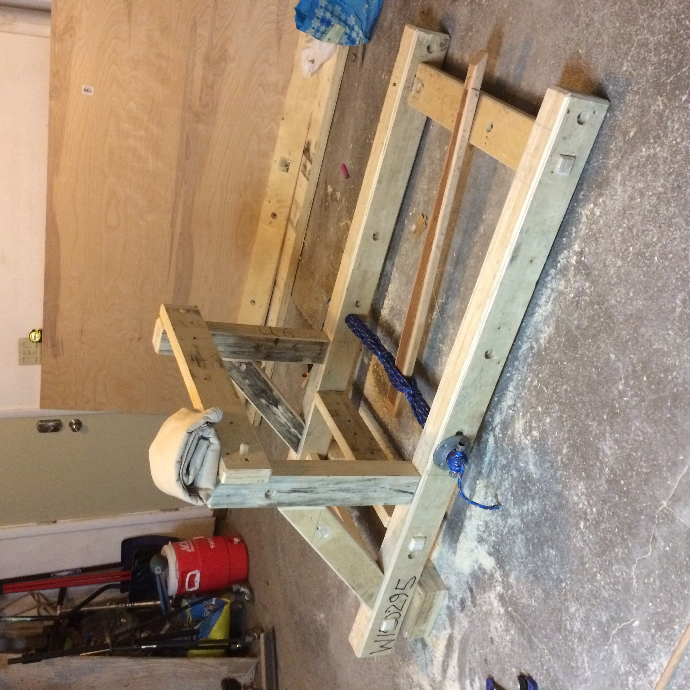
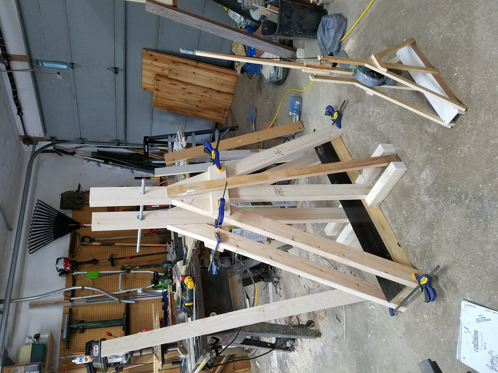
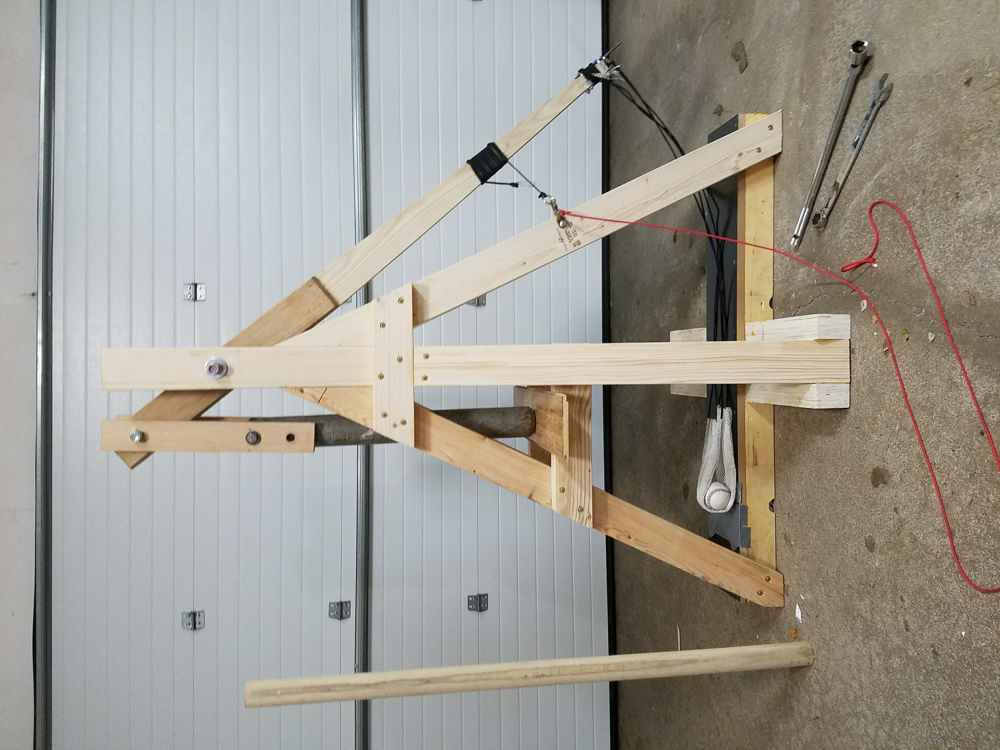

Catapults & Trebuchet
Two competition launchers: a torsion catapult, then a counterweight trebuchet. Best throw: a 5-pound rock launched up to 190 feet.

01 / 05 · PROOF OF CONCEPT
Torsion Catapult Prototype
A scale model of a torsion-powered catapult, the first working version of the design.

02 / 05 · SCALE UP
Full-Size Build
Scaled to full size. The main constraint was fitting it in a vehicle for transport.

03 / 05 · REDESIGN
Switching to Counterweight
Switched from torsion power to a counterweight trebuchet for more stored energy and range.

04 / 05 · ASSEMBLY
Fully Assembled
Final assembly with all hardware in place, built to reload and fire consistently.

05 / 05 · FIRE
Launch Footage
The trebuchet firing.